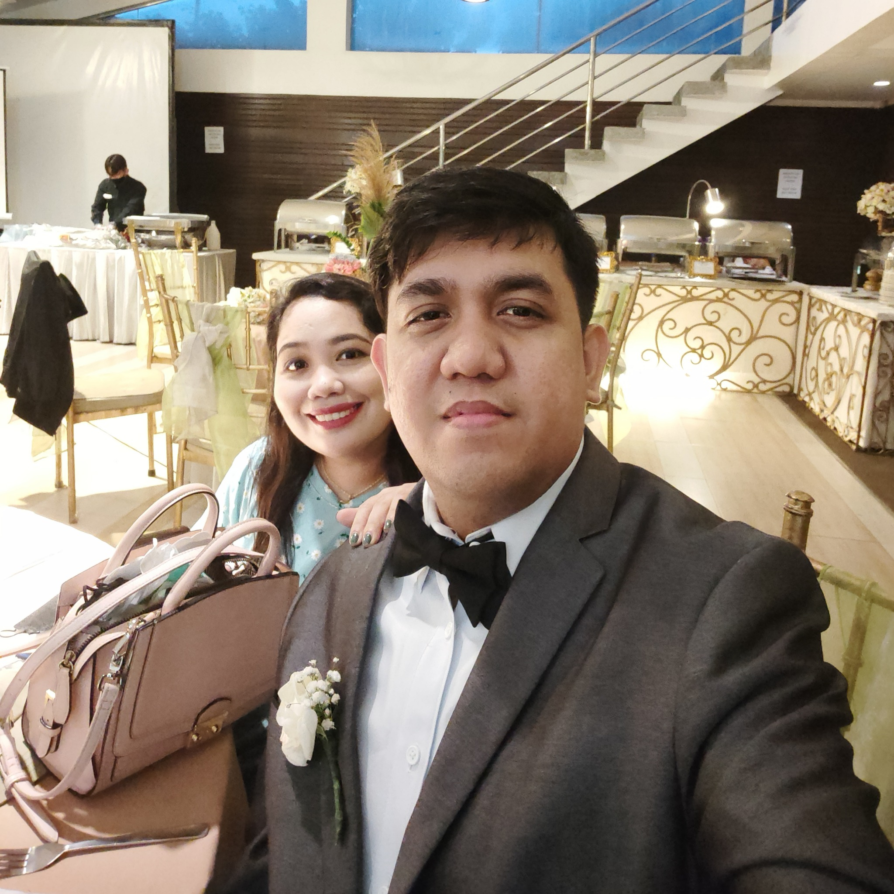

ICT Teacher Morts

Our National Hero
About your teacher..
A professional IT Software Engineer works as a part-timer teacher in AU.
Highly enthusiastic teaching professional who is eager to provide all students with a solid education.
Talent for bringing the classroom to life with real-world examples and innovative technology.
Proven ability for discovering students’ varying learning styles, ensuring each student’s unique academic needs are met.
Encouraging educator who offers plenty of positive reinforcement to maintain a calm and controlled classroom.
Well-rounded with exceptional communication, interpersonal, organizational, and problem-solving skills. Fluent in written and verbal English.
He teaches 4 ICT major subjects which are:
His classes were both in Grade 11 ICT-1 and Grade 12 ICT-1.
For more information, message your teacher [ Developed by @ ICT Teacher Morts. ]